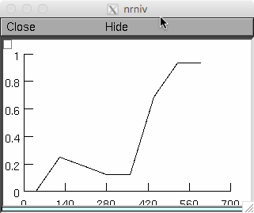

This is the readme for the models associated with the paper: Ferrante M, Ascoli GA (2015) Distinct and synergistic feedforward inhibition of pyramidal cells by basket and bistratified interneurons. Front Cell Neurosci 9:439 This NEURON code was contributed by M Ferrante. Either auto-launch the model from ModelDB or download and compile the mod files (nrnivmodl (linux/unix), or mknrndll (windows or mac)), and then start mosinit.hoc (double clicking in file explorer, or drag and dropping on nrngui (mac), or typing "nrngui mosinit.hoc" on the command line (without the quotes) on unix/linux. The short run of the model uses the file Fig3F_OrangeCurveSubSampled.hoc, takes about a minute to run and as the title suggests generates the orange curve in Figure 3F in the paper. You should see a graph like this:  The long run of the model uses the run_me.hoc file takes about 2 hours and 10 minutes to complete on a 2012 MacBook Pro. 20170118 This archive was updated by M Ferrante to include the short demo run.